编辑的话：莱布尼茨是17世纪时著名的哲学家和数学家，在其他诸多领域亦成就非凡。他所著如密码般的《数学笔记》，体现了他的微积分思想、方法和符号，虽然这小册子从未公开发表。而本文作者史蒂芬·沃尔夫勒姆（Stephen Wolfram）则的英国物理学家、数学家、软件工程师和企业家，也是文中一再提到的数学软件 Mathematica 和在线自动问答系统、被称为知识型计算引擎的 Wolfram Alpha 的开发者。本文编译自他的博客文章《拜访莱布尼茨》（Dropping In on Gottfried Leibniz）。
（文/Stephen Wolfram）多年来，我都对戈特弗里德·莱布尼茨很感兴趣，尤其是因为早在3个世纪以前，他就似乎想要制造一种类似Mathematica和Wolfram Alpha的工具，没准还可能会写本《一种新科学》。所以，在最近一次德国之旅中，我对能够拜访坐落在汉诺威的莱布尼茨文献馆感到兴奋不已。
翻阅着他发黄的手稿（仍旧够挺，经得起我触碰），我试着想象他写下这些篇章时的思绪，试图将我在这里看到的与3个世纪后我们所掌握的知识联系起来——这时，我感到了一种共鸣。
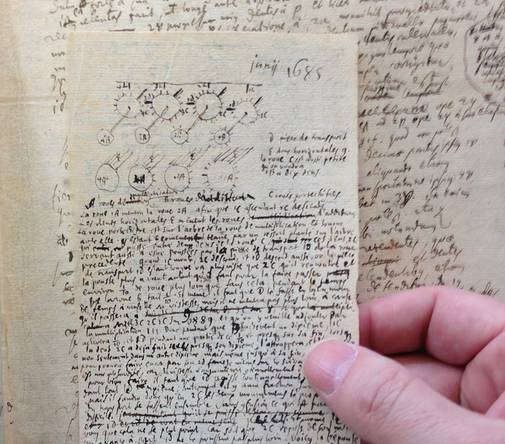
其中的一些记载，尤其是数学方面的，简直超越了时间，比如说下图中莱布尼茨写下的收敛于√2的无穷级数（文字为拉丁文）：
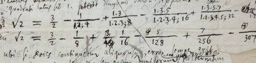
莱布尼茨写下的收敛于√2的无穷级数
又例如下图中，莱布尼茨试图计算该连分数的值，尽管他的算法是错误的，但他仍把整个过程记录了下来（其中的“Π”相当于等号的早期版本）：
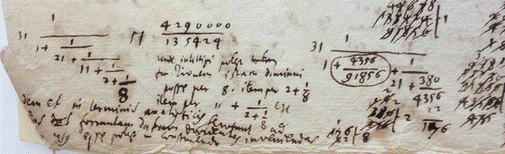
计算连分数的值，虽然算法错了，但莱布尼茨仍然记录下了整个过程。
再比方说下图中对微积分的一点总结，几乎能够列入现代的教科书：
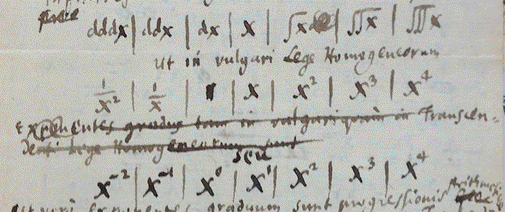
莱布尼茨对微积分的一点总结
但除此之外还有什么？莱布尼茨的工作及思想的宏观图景又是怎样的？
我一直都觉得莱布尼茨的形象有些令人难以捉摸。他做了很多看似迥然不同且毫不相关的事情——涉及了哲学、数学、神学、法学、物理学、历史学，不一而足。而他用来描述自己工作的语言在我们今天看来又都是来自17世纪的陌生措辞。
但是，随着我的进一步了解，以及对莱布尼茨这个人更深入的体会，我察觉到了隐藏在他诸多成果下的核心思维方向，而这一思维方向与我所奉行的现代计算机理念不谋而合。
对知识系统化和结构化的追求
1646年（伽利略逝世后第4年，也是牛顿出生后的第4年），戈特弗里德·莱布尼茨出生在现属于德国的莱比锡地区。他的父亲是一位哲学教授，母亲出身于图书贸易家族。莱布尼茨6岁那年，父亲去世。考虑到他年幼，2年后莱布尼茨才被允许进入父亲的书房，开始在其中徜徉书海。他于15岁进入当地大学学习哲学和法律，并在20岁时从这两门专业毕业。
即便在志学之年，莱布尼茨似乎就对知识的系统化和规范化很感兴趣。曾有过这样一类模糊的观点长期存在——例如14世纪拉蒙·柳利（Ramon Llull，是马略卡王国 [现西班牙] 的一名作家、哲学家、逻辑学家）在其半神秘主义著作《鸿篇》（Ars Magna）中所表达的——即我们可以建立起某种通用的体系，在该体系下，从一个适当的（笛卡尔所谓的）“人类思想字母表”中取出符号进行多样组合，就可能表达所有知识。在哲学毕业论文中，莱布尼茨就曾试图探讨这一思想。他用到了一些基础组合数学知识来计算概率。他还提到将思想分解为可以利用“创造的逻辑”进行处理的简单成分。另外，他还加入了一段自称为旨在证明上帝存在的论证。
正如莱布尼茨在晚年所说，这篇他在20岁时写的论文从许多方面来看都很幼稚。但我觉得，莱布尼茨正是从此开始了对种种问题的毕生思索。举例来说，莱布尼茨的法学毕业论文命题是“疑难法律案件”，通篇都在论述这类案件被简化为逻辑与组合数学问题从而得以解决的可能性。
尽管原本有望成为一名教授，然而莱布尼茨最终决定终其一生，为多个法庭及执政者提供顾问服务。有时他要贡献自己的学识，追溯艰深然而具有重要政治意义的族谱或历史；有时要对诸如法典、文献等进行系统化规范整理；有时则要进行实际工程设计，例如规划银矿排水方案；还有些时候——尤其是在早年生涯中——他要为政治举措提供“实时实地”的智力援助。
在1672年的一次此类政治行动中，莱布尼茨被派往巴黎，之后在那里度过了4年——在这一期间，他结识了很多当时的学界翘楚。在此之前，莱布尼茨的数学知识只处于基础水平。但在巴黎，他有机会学习所有最先进的思想与方法。举例来说，他曾找到克里斯蒂安·惠更斯，并成功通过了测试——求所有三角形数倒数之和，于是后者同意指导莱布尼茨学习数学。
经过多年的努力，莱布尼茨完善了他将知识系统化、规范化的理论，并一直在构想着一种能使知识——按现在的说法——可计算化的整体结构。他所设想的第一步是发展一门“符号学（ars characteristica）”——即用符号表示事物的方法论研究，并实际制定一套统一的“思维字母表”。在他接下来的设想中，通过这套单一指代体系，我们有可能“通过演算找到任何领域的推理真理[1] , 就像算术和代数那样。”这与如今我们所知的计算理论有着惊人的共同点。
他在提到自己的理念时用到了不少野心勃勃的说法，例如“知识方法总论”、“哲学语言”、“通用数学”、“通用系统”，还有“思维演算法”。他料想这一系统最终会应用在所有领域：科学、法律、医学、工程学、神学等等。但在其中一门学问中，他很快就取得了显著成就，那就是数学。
据我的了解，数学史上将数学符号当作中心课题来研究的案例惊人地少见。仅有几例，如19世纪末期，现代数理逻辑论开端伊始，戈特洛布·弗雷格（Gottlob Frege，德国数学家、逻辑学家和哲学家，数理逻辑的奠基人）及朱塞佩·皮亚诺（Giuseppe Peano，意大利数学家、逻辑学家和语言学家，数理逻辑先驱）等人的工作。还有近年来我在建立Mathematica和Wolfram语言的过程中的一些尝试。但莱布尼茨早在3个世纪前就开始了这项工作。并且据我揣测，莱布尼茨在数学领域的成就，很大程度上要归功于他在符号系统方面做出的努力，以及这一系统所带来的更为明晰的数学结构和流程之推论。
在数学领域符号系统方面的成就
当我们阅读莱氏的论文时，会发现他使用的符号及其演变十分引人入胜。其中很多看上去非常现代化。尽管也有少数17世纪的鬼画符，比方说他偶尔会用炼金术或占星术中的符号表示代数中的变量：
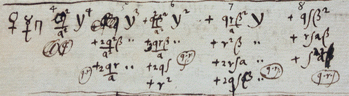
莱布尼茨用炼金术或占星术中的符号表示代数中的变量
在此处，他把Π用作等号，并略显俗套地把这个符号当成一个天平：把某一边的“腿”写得稍长以表示小于（“<”）或者大于（“>”）：
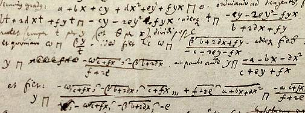
莱布尼茨表示的大于（“<”）或者小于（“>”）
这里的上划线用来表示合并同类项——可以说是个比括号更好的主意，尽管不方便打字和排版：
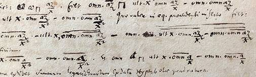
莱布尼茨用上划线表示合并同类项
今天，我们会用根号来表示根。但是莱布尼茨想在积分里也使用这个符号，并配以带着漂亮小尾巴的“d”。这让我想起我们在Mathematica中使用黑板粗体“微分d”来表示积分。
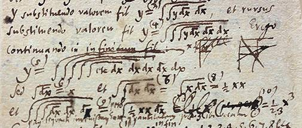
莱布尼茨在积分里使用根的符号
在解方程时经常会用到±，但这常常使分组过程十分混乱，比如说a±b±c。而莱布尼茨似乎也遇到了类似的麻烦，但他发明了一种标记法来解决这问题——这种方法即便在如今也实在值得一用：
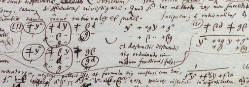
莱布尼茨发明标记分组±
莱氏使用的一些标记让我也不明就里。不过这些上波浪线到确实赏心悦目：
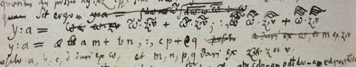
还有这些小点：
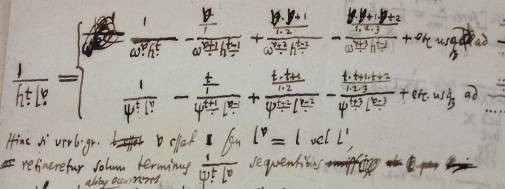
或者是这些看上去很有趣的图表：
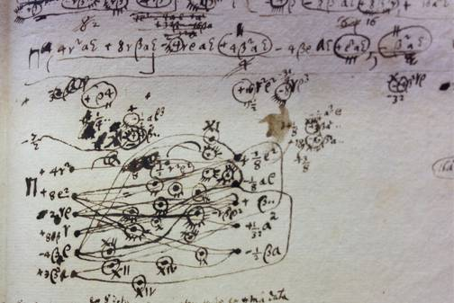
当然，莱布尼茨最著名的符号要数他创造的积分符号（用长“S”表示“总和”）以及“d”。这一系统首次被总结出来就是在这张纸的空白处，日期是1675年11月11日（事后“1675”里的“5”被改成了“3”，也许是出自莱布尼茨的手笔）：
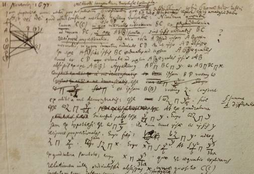
莱布尼茨创造的积分符号
我所注意到的有趣的一点是，尽管创造了这些“数学”运算符号，莱布尼茨显然并没有为逻辑运算发明一套类似的符号。“或”仅仅使用拉丁文“vel”表示，“且”则是“et”，如此等等。而当他想到逻辑量词（例如现代的∀和∃）这个点子时，他也只是用拉丁文缩写U.A.和P.A.草草了事。
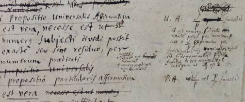
莱布尼茨用拉丁文缩写U.A.和P.A.
早期创建“算数机”的尝试
一直让我感到反常的是，在思想史上，统泛化运算（Universal Computation）的概念直到20世纪30年代才萌生。而我总怀疑莱布尼茨的手稿中是否隐藏着一份统泛化运算的早期版本——也许甚至有一份图样可供今人解读出一套类似图灵机的系统。但是随着对莱布尼茨愈加深刻的接触，我清楚地看到了为何事实并非如此。
其中一个重要原因，据我推测，是他并不足够重视离散系统。他将组合数学中的成果称为“不证自明的”，大概是因为他考虑到这些成果可以用运算方法直接证明。而对他而言，只有“几何的”或者连续数学问题才值得为之发明微积分来解决。在描述曲线特性等问题时，莱氏想出了类似连续函数的方法。但他从未把这种函数思想应用在离散数学中——而这却很可能引导他开始思考构建函数的通用元素。
莱布尼茨认识到了他的微积分的成功，并且一心想为其他领域也创造出类似的“微积分”。在他与统泛化运算另一次失之交臂的经历中，莱布尼茨想到用数字来将逻辑特征编码。他设想将某事物的每一个可能的性质都与一个不同的质数相对应，然后再通过这些代表其性质的质数之乘积来描述这一事物——随后再用数学运算来代替逻辑推演过程。但是他只考虑到了静态性质——并且从未能想到像哥德尔数那样，将运算同样用数字进行编码。
尽管莱布尼茨没有产生统泛化运算的思想，可是他确乎体会到了一个理念：计算在某种意义上是机械化的。而且他在早期似乎确实下过决心要建造一个实实在在的机械计算机来进行数学运算。可能部分原因是为了他自己用着方便（这可是开发新技术的万能理由！），因为撇开他在代数及其他方面的造诣不谈，他的手稿边上写满了基础（有些还是错误的）算式——而这些也一并被保存下来供后人观瞻：
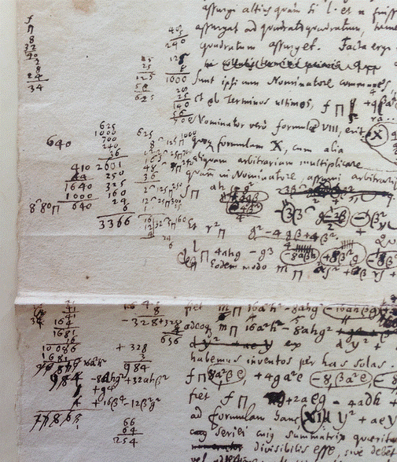
在莱布尼茨的时代，曾有过零星的几个建造机械计算机的实例，并且在巴黎时期，他无疑见识过帕斯卡于1642年建造的加法计算器。但是莱布尼茨致力于建造一个“全能”计算机，而这将是首次可以在一台机器上进行全部4种基础运算。他还想给这机器设计一个简单的“用户界面”：使用者可以将操作柄扳向一方进行乘法，扳向反方向则是除法操作。
在莱布尼茨手稿中，探讨该机器的工作原理的各式简图随处可见：
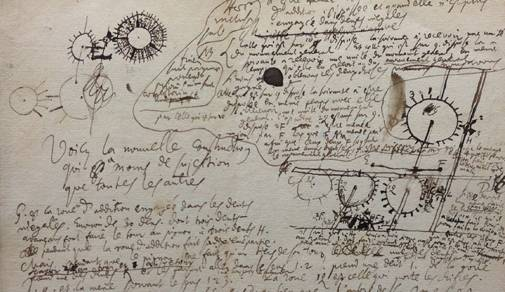
莱布尼茨手稿中的各式简图
莱布尼茨原本设想他的计算机能具有优秀的实际功用——实际上他似乎希望能将其发展为一桩成功的生意。但实际上，单是让这台计算机稳定地运作便令莱布尼茨劳心费力。因为正如那一时代的其他机械计算机一样，这台机器不过是个被夸大的了里程表。它和近200年后查尔斯·巴贝奇（Charles Babbage，英国数学家、发明家兼机械工程师）的机器类似，当发生大规模的连动时，从机械角度上很难实现大量的转盘同时运转。
莱布尼茨最初建造了一台木制原型机，计划仅用来处理3到4位数的运算。但是在他1673年造访伦敦期间，这台原型机在给罗伯特·胡克等人展示的过程中表现得差强人意。不过他始终认为自己能够解决所有问题——比方说他在1679年（用法文）写下的“算数机最终修正案”：
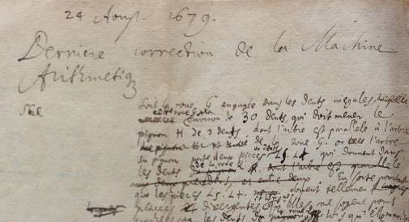
莱布尼茨1679年用法文写下的“算数机最终修正案”
然而1682年的一篇笔记说明还有更多的问题亟待解决：
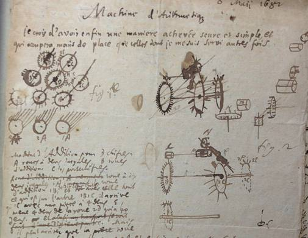
但莱布尼茨仍依据其笔记起草了一份方案——并且签约了一位工程师来建造一台能够处理更高位数的铜制版本：
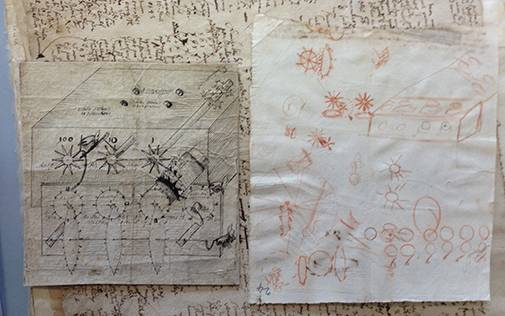
读莱布尼茨为这台机器写的“营销材料”是件趣事：
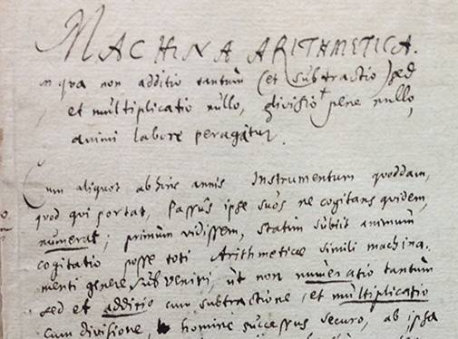
莱布尼茨为“算数机”写的“营销材料”
另外还有部分“使用说明”（附带365×24的计算过程作为“工作样例”）：
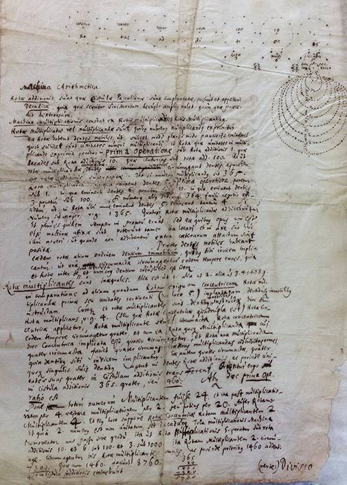
“算数机”的“使用说明”
并附以用法详图作结：
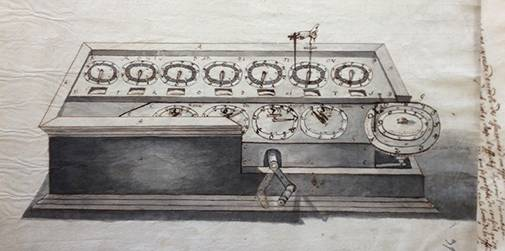
“算数机”的用法详图
尽管付出了这么多的努力，计算器所存在的问题始终没能解决。事实上，40多年来，莱布尼茨始终在坚持调试他的计算器——大概总共为之投入了（相当于现今的）超过100万美元。
那么这台计算机的实物最终下落如何呢？在我参观莱布尼茨文献馆时，不由得提出了这个问题。“好吧，”东道主说，“可以给你看看。”在一间储藏室里，摆满箱子的排架之间，莱布尼茨的计算器就摆放在一个玻璃盒中，看上去崭新如初——我顺便拍了这张古老与现代怪异并置的照片：
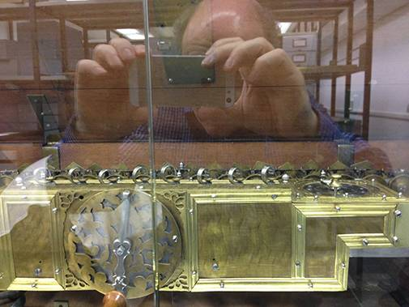
莱布尼茨创造的“计算器”，后景隐约可见本文作者、正在拍照的沃尔夫勒姆。
所有的部件都在这里。包括一个便携的木制收纳箱。同时还配有一个曲轴摇柄。另外，如果一切运转正常，轻摇几分钟就能够赋予它处理一切基础数学运算的能力：
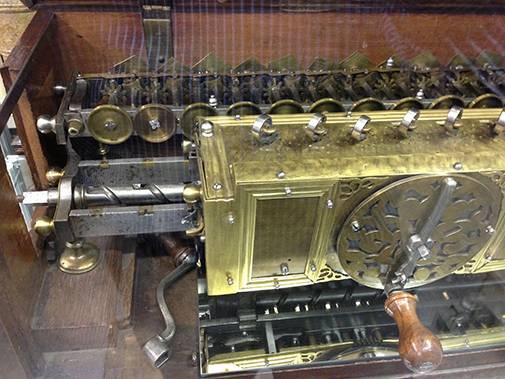
莱布尼茨发明的手摇计算机细节，可以做四则运算。
数与算术的本质：莱布尼茨与2进制
莱布尼茨明确地将他的计算机看作一个实用方面的项目。但他仍希望从中归纳出些许结论，例如一条可以用来描述机械联动几何学的普适“逻辑”。同时，他还思索了数与算术的本质。并且另辟蹊径地想出了2进制。
几个世纪来，10进制以外的进位制一直被应用于趣味数学中。但莱布尼茨认为2进制具有特殊的含义——说不定它是连接哲学、神学与数学的重要枢纽。在他与从中国回来的传教士交流，并认识到2进制正是《易经》的核心思想后，便有了更大的动力，并且认为这与自己的“通用系统”在思想上异曲同工。
莱布尼茨琢磨有可能建造一台以2进制为基础的计算机。但他似乎还是觉得只有10进制才有实用意义。
莱布尼茨对2进制的记载读来有些奇怪。有些部分很清晰实用——而且仍显得十分现代。但还有些部分非常有17世纪的风格——比如讨论2进制证明了万物都是来自虚无，其中1可被视为上帝，而0则象征着无。
在莱布尼茨之后的数个世纪里，几乎没人用2进制做出些许成果：事实上，直到近几十年来数字计算机的兴起才改变了这一局面。所以，看看莱氏的手稿，其中他用2进制进行的计算很可能是最为“超越时代”的内容了：
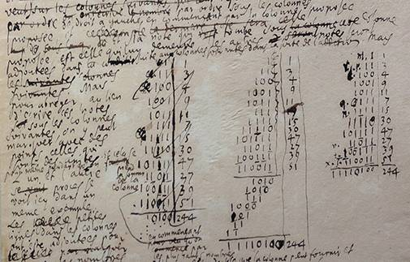
莱布尼茨手稿中用二进制进行的计算
通过2进制的研究，莱布尼茨从某种意义上探寻着可能存在的最简单的基础结构。毫无疑问的是，在讨论他称为“单子”的概念时，他也是在进行类似的工作。我不得不承认，我从来没能真正理解单子论。每当我觉得自己就要搞懂的时候，其中提及灵魂的部分又总会让我摸不着头脑。
尽管如此，莱布尼茨似乎推论出“所有可能世界中最好的一个”即“由最少的规则构建出最多样化现象”的那一个，这一点始终深深吸引着我。其实，在撰写《一种新科学》之前，那还是1981年，我刚开始学习并构建一维元胞自动机，我就曾考虑给它们命名为“集群（Polymones）”——可在最后一刻，单子论再一次把我搞懵，吓退了我。
封存的文件及手稿
莱布尼茨和他的文件一直都被包裹着一层神秘的色彩。库尔特·哥德尔——也许是他的妄想症作祟——似乎就曾坚信莱布尼茨发现了被压制了几个世纪的伟大真理。然而虽然在莱布尼茨辞世后，他的手稿确实被封存了起来，但那是因为他在历史和族谱方面的研究——以及其中可能牵涉到的国家机密。
莱布尼茨的文件在很久以前就已开封，3个世纪后，我们可能会以为其中的方方面面都已被透彻地研究过。可实际情况是，即使在如此长的时间里，也从没有人真正细致地通览过所有遗稿。这倒不是因为文件量太大。这些文件一共算来也只有200,000页——估计能占去架子上十几格的空间（这仅比1980年以来我个人的文档略大一点）。真正的问题是材料的多样化。不仅仅是涉及多种学科。还因为有很多重叠的草稿、笔记和信件，其间的关系不甚明了。
莱布尼茨文献馆保存了一系列令人费解的文件。从尺寸巨大的：
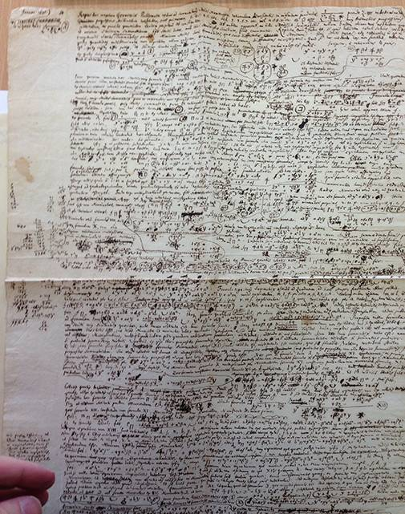
到十分迷你的（随着年龄增长，近视愈发严重，莱布尼茨的字也越写越小）：
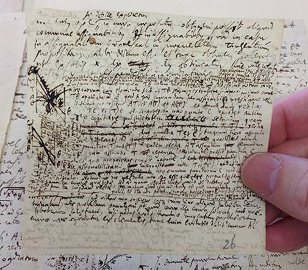
随着年龄的增长，莱布尼茨的字越写越小
档案里的大多文件都看上去十分严肃谨慎。但尽管那个年代纸的价格不菲，我们仍能发现莱氏的随手涂鸦留存至今（这会不会是斯宾诺莎？）：
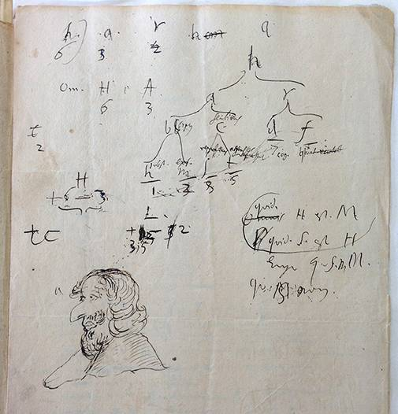
莱布尼茨曾与数百人有书信来往——其中既有名流也有凡夫——信笺遍及欧洲。在300年后的今天，后人能从中找到雅各布·伯努利等人寄来的“随笔短笺”：
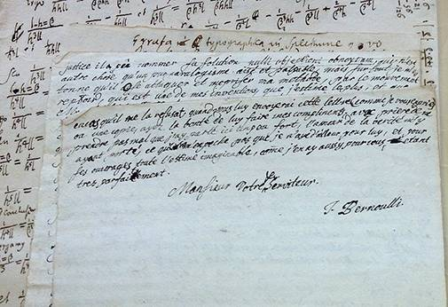
雅各布·伯努利等人给莱布尼茨寄来的“随笔短笺”
莱布尼茨长什么样？请看这里，既有他的官方肖像，也有不带那顶特大号假发（甚至在当时也是个笑柄）的版本，据推测他那么做是为遮住自己头上的一大块囊肿：
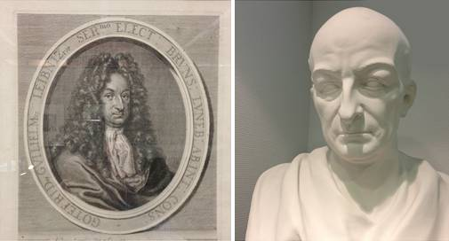
莱布尼茨像，据说他戴假发是为了隐藏头上的囊肿。
在莱布尼茨文献馆里，除了大量文件和他的机械计算机之外，还有一件物品：他出门时带在身边的一把折椅，他将其挂在车厢里，这样在车厢移动时他仍能继续书写：
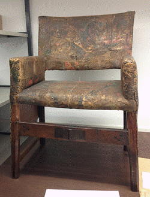
莱布尼茨出门时带在身边的一把折椅，方便在车厢移动时也能继续书写
这时我们不禁好奇莱布尼茨的墓碑上镌刻着怎样的箴言。可是实际上，当莱布尼茨在70岁那年与世长辞时，他的政治生涯已跌入低谷，没人为他建造精美的纪念堂。尽管如此，我在汉诺威时仍十分热切地想要瞻仰他的墓——却发现碑上只用拉丁文简单地写道：“莱布尼茨埋骨处”。
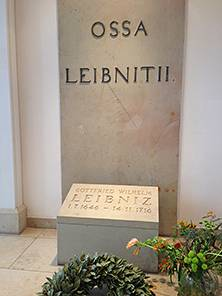
莱布尼茨的墓碑，上面只是简单地写了“莱布尼茨埋骨处”。
然而，在城市的另一端，我发现了另一种形式的纪念——一家直销店里的饼干被冠以莱布尼茨的名字，以表示对他的敬意：
以莱布尼茨冠名的饼干
莱布尼茨，成就之下的限制
那么，归根结底，我们该怎样看待莱布尼茨呢？如果历史以另一种形式发展，或许莱布尼茨会与现代的计算机技术建立起直接的联系。可事实是，莱布尼茨的大多数尝试都是孤立的——要理解他的工作很大程度上要靠把现代的计算机理论投射回17世纪。
凭我们现在的了解，很容易看清莱布尼茨已经掌握的知识和他没能搞懂的。他领会到了利用规范化、符号化的指示物来代表多种不同事物的概念。他还推测可能存在通用化的元素（也许甚至仅需要0和1）可以用来组成这些指示物。并且他意识到，从这些知识的规范化、符号化表示出发，有可能通过机械的方式计算其结果——或许还可以通过穷举所有可能性来开辟新的知识。
莱布尼茨的部分记载显得过于抽象且形而上——有时简直令人恼火。但在某种程度上，他又相当务实。而他在技术上又具有足够的本事，常常能够取得实际进展。他的一贯方法似乎是以试图创造一个用来阐明事理的规范结构为开端——如果可以的话，还要用到规范的符号。在这之后，他的目标便成了创建一种可以系统地得出结论的“演算法”。
说实在的，他只在一个特定领域用这套方法取得了成功：连续“几何”数学。他从未在离散数学上认真钻研，实在是一个遗憾。因为我认为他可能会取得一定成果，甚至不难想象可能就此触及统泛化运算的理念。他也许最终会开始列举可能的系统，就像我在计算机领域所做的那样。
他还在另一个领域上试验了这套方法，那就是法学。但他在这个方向上起步太早了，直到现在——300年后——计算法学才刚开始显出现实意义。
莱布尼茨还在物理学上做出了尝试。但尽管他在一些具体概念上取得了成果（比如动能），却从没能够像牛顿在他的《原理》（这里指的是《自然哲学的数学原理》）一书中实际做到的那样，总结出一套大型的“世界的体系”。
在某种程度上，我认为莱布尼茨之所为没能实现更高的成就，是因为他太执着于实用性，以及——这一点和牛顿很像——解构实际物理过程，而不是将眼光放在相关形式结构上。因为，如果莱布尼茨曾至少尝试一些我在《一种新科学》里所做的基础性探索——我想这对他而言毫无技术难度——那么科学史恐怕就要被重新改写。
我也开始意识到，当莱布尼茨在发明微积分的公关战中败给牛顿，受到威胁的并不仅仅是他个人的名誉，更有一种对科学的思考方式。牛顿在某种意义上是一个典型的实用主义者：他发明了一种工具，然后展示了如何将其应用于计算物质世界中的现实问题。但莱布尼茨的视野更为广阔，也更具哲学意味，他认为微积分的本质并不是工具，而是一个足以促使我们研究其他领域的规范化以及其他通用性工具的范例。
我常常以为，我所奉行的现代计算化思维方式是规范化、结构化思考显著且必然的一个特点。但我从未清晰地认识到这种显著性是否仅仅是这个时代，以及我们使用当代实用计算机技术的经验所带来的结果。对莱布尼茨的关注给了我们新的视角。事实上，我们可以看到现代计算化思维方式的部分核心思想，甚至在远早于这个时代就成为了可能。但是技术大环境的局限和过去几个世纪的理解方式，给这种思想的前途界定了明确的极限。
当然，这也给今天的我们带来一个发人深省的问题：由于不具有未来的科技大环境，我们在认识计算化思维的内核的道路上又落后了多少呢？对我而言，对莱布尼茨的研究使我更加聚焦于这一问题。而有一点是我可以清楚地预见的。
在莱布尼茨的一生中，他所见过的计算机寥寥无几，而且它们只能做基本数学运算。如今世界上有数10亿台计算机，而它们可以胜任各种工作。但在未来，计算机的数量必然远大于此（受计算等价原则影响，计算机将更容易制造）。而且毋庸置疑的是，我们生产的所有物品显然都将由各级计算机制造。最终，所有事物都一定将成为可编程的，小到原子。当然，生物学已经在某种程度上实现了这一点，只是尚有许多约束。但我们将来终能彻底地将其实现，无论何处。
在某种程度上，我们已经可以看出这暗示着计算过程与物理过程的部分结合。但对我们来说，推测这种融合的难度就好比让莱布尼茨设想Mathematica和Wolfram Alpha一样。
莱布尼茨死于1716年11月16日。到2016年就是整整300年了。我们大可利用这一绝好的时机，确保终于能够彻底地研究莱布尼茨所留给我们的全部遗产——并且庆祝在3个世纪后，莱布尼茨多少重要的远见已经成为现实，纵然是以他永远无法想象的方式。
内容注释
[1] 莱布尼茨将真理分为推理真理和事实真理。其中推理真理是普遍必然的，单凭逻辑学的矛盾律就可以推论出来，它的反面是不可能的。而事实真理是偶然的，它是从归纳得来的，必须符合充足理由律，它的反面是可能的。
编译自：Dropping In on Gottfried Leibniz
文章图片：en.wikipedia.org
2013-07-26 12:01 秦鹏 果壳译者
“如果历史以另一种形式发展，或许莱布尼茨会与现代的计算机技术建立起直接的联系。”莱布尼茨在思想史上的位置，对他个人而言，多少具有一定偶然性。然而历史本身却总能在一片熙熙攘攘的嘈杂中显现出必然。纵使莱布尼茨庸碌无为地走完一生，也还会有其他人想到以计算的方式思考、理解并推理我们的宇宙。数学是人类理性思维的一种“技术实现”，而理性主义的兴起绝非莱布尼茨一人之功。比莱布尼茨年长半个世纪的笛卡尔也曾经提出人类可以用数学的方法思考。而那起著名的公案更是令我们确信，莱布尼茨和牛顿如果少了一个，起码微积分还是安然无恙的，大不了只是符号不同。如果回溯“数理逻辑”的来龙去脉，我们会发现它还是亚里士多德逻辑学的发扬光大。好吧，或许我们将永远难以说清道明古希腊贤哲崛起的“必然性”，但至少从那时往后，西方思想重视实证、逻辑的传统，便有了坚实的根由。
说到亚里士多德，必然会想起他的“五大元素”学说。大概在人类文明的幼年时代，大家的想象力也都差不多吧：古老的东方巨龙也定义了组成世界并推动世界运行的五大基本物质：金木水火土。不同的是，随着时间的推移，亚里士多德的逻辑学演变成了以观察、思辨认识自然的所谓“科学方法”，从而使他自己对世界的幼稚解释被一部部恢宏而严密的自然学科所取代。而在中国，直至当代，五行仍旧是一些或愚昧无知或居心叵测之人的世界观之根基。数学和科学的课本上满纸西人名姓，难以体会中国文化何以敢称“博大精深”。
莱布尼茨是思想的参天大树，但我们对他高山仰止的同时，也该审视一下这巨树立足的土壤。思想总是在进化的，人类永远无法断言真理在手，欧洲也曾经有过黑暗的中世纪。然而掌握了正确的思想方法，还是可以保证我们是在朝正确方向前进的，或者说终归能够找到正确方向的。有时候，我们会提到“近代中国的落后”，其实我们谈论的只是一个表象、一个最终的结果。真正的落后，也许应该是始于“道可道、非常道”的模棱两可，或是“独尊儒术”的昏聩迂腐。几千年来，当大陆另一端的海洋文明在充满敌意的惊涛骇浪面前以质疑和探究的目光审视自然时，天朝上国的子民们享受着稳定的气候和富饶的国土，用“天人合一”的哲学掩饰着不求甚解的懒惰。所以，我们在诗句中仅以“春风”来解释草木兴盛（春风又绿江南岸），孟德尔却打算搞清楚豌豆表面或平或皱的奥妙；我们在自己的身体上画出了不知所云的“经络”，创造出一堆“非解剖学意义”的心肝肺，维萨里却揣起刀子摸进了墓地。我们的先人不曾想到，农耕社会的田园牧歌总有一天会被机器的轰鸣所取代， “奇技淫巧”会成为第一生产力。到那个时候，求实而理性的民族才会成为引领人类文明的棋手。
欧洲当代的饱学之士回望先贤，自有种继往开来的幽思。而我们这些局外之人远观西方一部追根探底孜孜以求的思想史，岂能没有一番自省和反思。除了“近代的落后”，如今我们更爱说“伟大复兴”。问题是，几千年有技（技术、技艺）无科（科学理论）的文化造就了今日之状，如果没有伤筋动骨的剖析和改造，不拿异族文明的思想营养弥补长久的缺失，我们能靠它后来居上反败为胜吗？取其鱼，是跟随之计；师其渔，方为赶超之策。我等有志科普的同仁，当心存此念。
作者：盖子
链接：http://www.guokr.com/article/437228/
来源：果壳
本文版权属于果壳网（guokr.com），禁止转载。如有需要，请联系sns@guokr.com